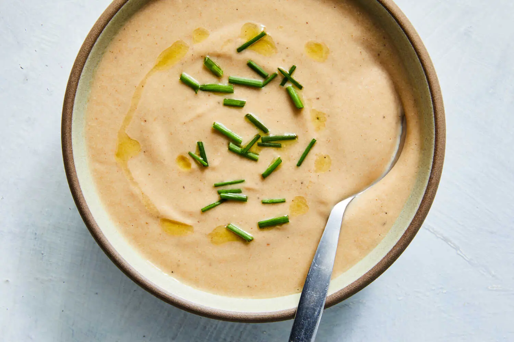

Creamy Cauliflower Soup
By Sue Li | Published February 18, 2025

Photo: Linda Xiao for The New York Times | Food Stylist: Monica Pierini.
Description
Creamy and comforting, this cauliflower soup happens to be vegan, and takes its silky texture from being simmered and thickened with roasted cashews. The nuttiness of the cauliflower and the cashews is balanced by the addition of a tart apple. The preferred thickness of creamed soups varies, so if the soup feels too thick, just adjust it to your ideal level of creaminess, adding more stock or water — and an additional sprinkle of salt — as needed.
Ingredients
Yield: 6 servings
- 6 tablespoons olive oil, plus more for serving
- 1 large head cauliflower (about 1½ pounds), cut into 1-inch pieces
- Salt and pepper
- 1 small tart apple, peeled, cored and cut into 1-inch pieces
- 3 medium shallots, thinly sliced
- 6 large garlic cloves, coarsely chopped
- 1 teaspoon ground coriander
- ⅔ cup roasted, unsalted cashews
- 6 cups vegetable stock or water, plus more if needed
- Chives, for serving
Steps
- Heat 4 tablespoons olive oil in a large, heavy pot or Dutch oven over medium-high. Add the cauliflower and cook, without stirring, until the layer of cauliflower in the bottom of the pot is browned, 3 to 4 minutes. Season with salt and pepper and stir the cauliflower. Again, cook the cauliflower, without disturbing it, until the layer at the bottom of the pot is browned, another 2 to 3 minutes. Keep repeating until the cauliflower is uniformly browned, up to 15 minutes total.
- Add another 2 tablespoons of olive oil to the pot, then add the apple, shallots and garlic; season with salt and pepper. Stir to combine and cook until the shallots are golden on the edges, 5 to 6 minutes.
- Add the coriander and cashews and toss to combine. Add 6 cups stock, then bring the mixture to a boil over high heat. Once the mixture is boiling, adjust the heat to medium-low, partially cover the pot and simmer until the cashews are softened, about 30 minutes.
- Blend the soup with either an immersion blender or in a blender for a smoother texture. (If the soup feels too thick, stir in more stock or water to thin to your desired consistency, and season with salt to taste.)
- Divide the soup among bowls, drizzle with additional olive oil and sprinkle with chives.
© The New York Times Company. All rights reserved.
Home